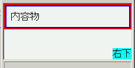

初期コンテナブロックのサイズは閲覧領域のサイズより小さくならない。このため内容物の量が少ない文書を表示したとき、初期コンテナブロックに対して絶対配置する要素は、閲覧領域に対して配置されてしまう。
<div style="position:absolute; bottom:0; right:0; background:lime;"> 右下</div>
このdiv要素は、文書全体の右下部に配置されるはずです。
内容物が少ないときのスクリーンショットです。内側のボーダー（青）はbody要素に、外側のボーダー（赤）はhtml要素に設定したものです。
Opera7.22標準モード
Opera7.22で不具合の発生を確認しました。